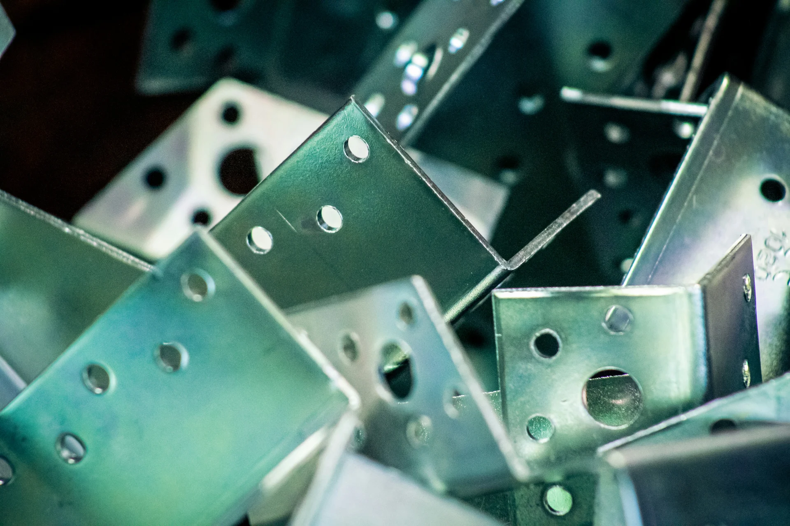
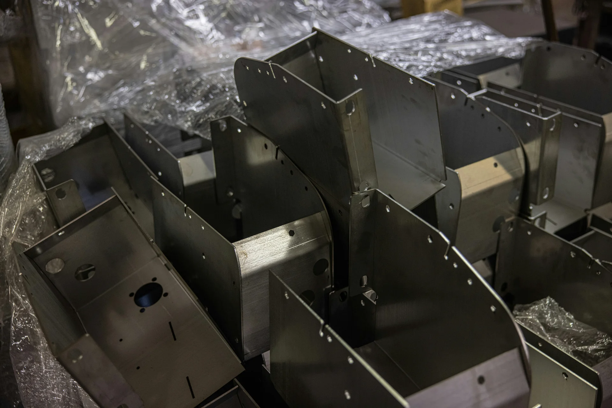
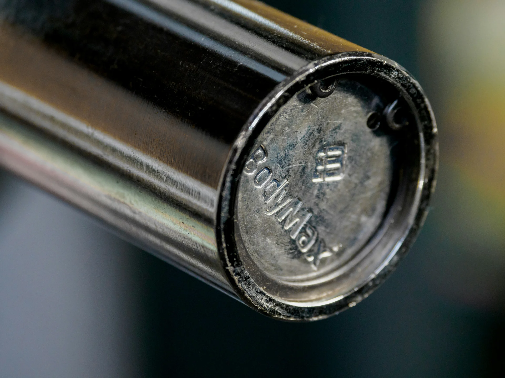
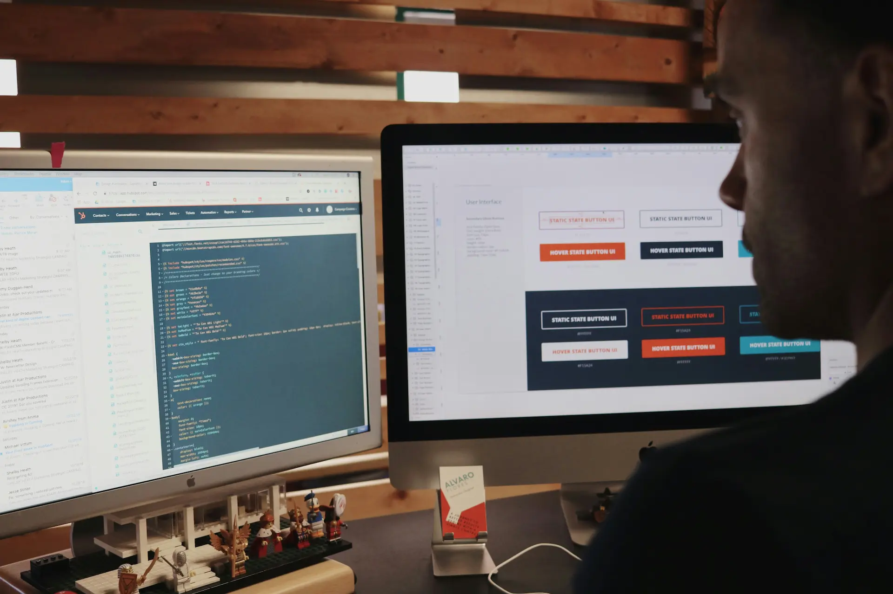

Solicitation Review
Review of RFQ details, delivery expectations, packaging instructions, inspection requirements, and supplier feasibility.

NSN Parts Sourcing
Semper Fi Services supports DLA, defense, federal, and aerospace supply requirements through controlled NSN parts sourcing, supplier verification, traceability review, documentation control, MIL-STD packaging awareness, and contract-ready fulfillment coordination.
Why SFS
Semper Fi Services is a veteran-led aerospace and government supply company focused on controlled sourcing, disciplined communication, documentation readiness, and quality-driven execution.
Our model is not built around claiming inventory we do not control. It is built around reviewing the requirement, finding realistic supplier paths, verifying documentation expectations, and supporting government-ready execution from quote review through delivery closeout.

DLA RFQ Review
DLA RFQs can include details that directly affect whether a quote is realistic. Packaging requirements, source inspection, production lot testing, approved source restrictions, delivery schedules, and documentation requirements must be reviewed before supplier commitment.
Semper Fi Services supports RFQ review by evaluating sourcing feasibility, supplier responsiveness, lead-time risk, documentation availability, and contract execution requirements before moving forward.
Review of RFQ details, delivery expectations, packaging instructions, inspection requirements, and supplier feasibility.
Supplier outreach focused on manufacturers, approved sources, authorized distributors, and qualified supplier channels.
Review of supplier lead time, availability, production status, and realistic delivery timing.
Attention to clauses, packaging, marking, inspection, testing, traceability, and documentation requirements that affect execution.
NSN Sourcing Support
National Stock Number sourcing requires more than searching for availability. Government and defense supply requirements often involve approved sources, documentation requirements, traceability records, inspection clauses, packaging instructions, delivery deadlines, and supplier readiness.
Semper Fi Services supports NSN sourcing by reviewing the requirement, identifying practical supplier paths, checking documentation expectations, coordinating supplier communication, and helping determine whether the item can be sourced and delivered in a contract-ready manner.

Supplier Verification
Supplier selection is one of the most important parts of NSN sourcing. A supplier may appear to have access to a part, but the requirement may still depend on approved source status, manufacturer traceability, quality system evidence, documentation support, or inspection readiness.
Semper Fi Services reviews supplier capability, responsiveness, documentation support, and contract alignment before treating a source as viable.
Part Categories
Semper Fi Services supports sourcing across selected aerospace, defense, industrial, and government supply categories where supplier capability, documentation, and traceability can be reasonably verified.
Bolts, screws, nuts, washers, pins, retainers, inserts, spacers, and related aerospace and military hardware.
O-rings, seals, gaskets, packing materials, and related components used in aviation, industrial, and mechanical systems.
Adapters, fittings, connectors, couplings, and fluid-system support components for aviation and industrial applications.
Bearings, bushings, sleeves, and controlled mechanical components when documentation and supplier capability can be verified.
Selected electrical, mechanical, and support components used in defense supply, aviation maintenance, and industrial procurement environments.
Selected support equipment parts, maintenance-related components, and contract-specific supply requirements.

Traceability
For NSN parts, aerospace hardware, and DLA supply contracts, documentation is not an afterthought. Missing records, unclear traceability, incomplete certifications, or unsupported inspection documentation can delay acceptance and increase contract risk.
Semper Fi Services treats documentation as part of the sourcing and delivery process. We support organized review of supplier documents, certificates, material records, inspection evidence, test documentation, packaging records, and closeout files.
Certificates of Conformance and material certifications when required.
Manufacturer traceability records, lot records, and batch records when applicable.
Inspection documents, test documentation, and supplier records used for acceptance support.
Packaging evidence, shipment records, delivery tracking, and contract closeout documentation.
Inspection Readiness
Some DLA and defense supply requirements involve source inspection, production lot testing, MIL-STD packaging, MIL-STD marking, or other contract-specific acceptance conditions. These requirements must be identified early so suppliers understand what is expected before material is released.
Semper Fi Services supports inspection-ready execution by coordinating documentation expectations, supplier readiness, testing awareness, packaging review, and shipment closeout discipline.
Supplier coordination focused on product status, document availability, inspection timing, and release readiness.
Awareness and coordination support for sampling, lab interaction, test documentation, and record control when required.
Review of packaging, preservation, unit pack, quantity per unit pack, labeling, and shipment requirements when listed.
Support for marking and labeling review so shipment identification aligns with government expectations.
In simple terms, inspection readiness means confirming the supplier understands the requirement before material ships. Packaging, marking, testing, documentation, and inspection expectations should be reviewed early so the RFQ can move forward with fewer surprises and better closeout readiness.
RFQ Checklist
Send us the NSN, part number, item description, quantity, required delivery date, solicitation number, packaging requirements, inspection requirements, approved source restrictions, or documentation requirements. We will review the request and determine whether Semper Fi Services can support the sourcing and execution path.